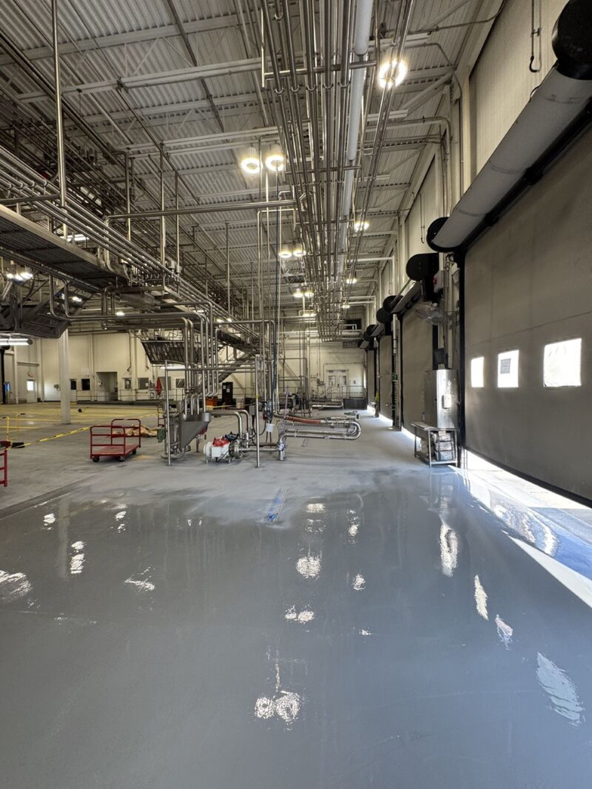
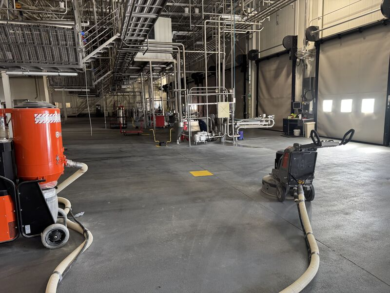
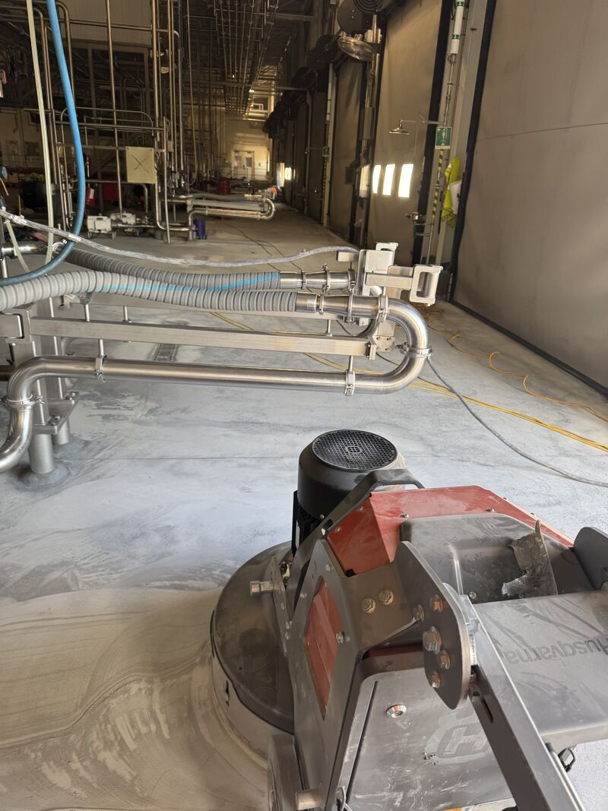
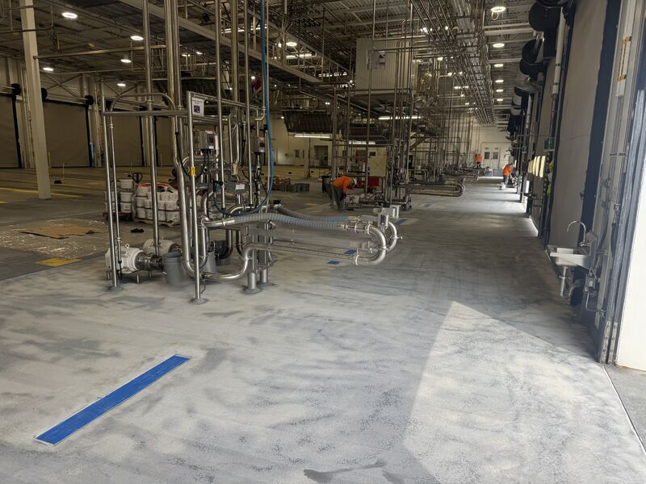

Dairies do not get much downtime. Most run 24/7, so when the yearly shutdown comes around, every contractor in the building is working against the same clock. That is usually when the plant finds out who can work clean, stay organized, and give the room back when they said they would.

A repeat customer called us in on a floor that was chipping in a few spots. When we evaluated it, the base still had plenty of life left. That matters. A floor can have problem areas without needing a full tear out, and the right answer is not always the biggest invoice.
For this shutdown, the better answer was to resurface half the space with our SaniQuartz system and a fresh top coat. The plant got the damaged surface addressed, the room stayed on schedule, and the floor was ready for production when the shutdown ended.
Evaluate Before You Replace
Chipping can mean a few different things. Sometimes the old floor has failed all the way down and needs to come out. Sometimes the base is still sound, but the top needs attention before the damage spreads. Those are different problems, and they should not get the same proposal.
On this one, the base condition let us save the customer real money and real downtime. Instead of selling a full replacement, the crew focused on surface prep, resurfacing, and the top coat needed to put the space back into production shape.


The Shutdown Window Is the Job
In a dairy, the work is not just the floor. It is the window. The plant has a date and time when production starts again, and every trade has to fit inside that reality. Running late is not a small inconvenience when milk deliveries, sanitation, equipment, and production crews are waiting on the room.
That is why planning the scope honestly matters. A full tear out has its place, and we do plenty of them. But if half the space can be resurfaced correctly now, inside the yearly shutdown, that is the smarter move. It keeps the room moving, keeps the budget in line, and leaves a clear plan for the other half next year.

Need a Shutdown Floor Plan?
Not every floor needs a tear out. Knowing the difference is what saves plants real money and real downtime. If you have a chipping floor and a shutdown window coming up, we can help decide whether it needs replacement, resurfacing, or a phased plan that keeps production on schedule.